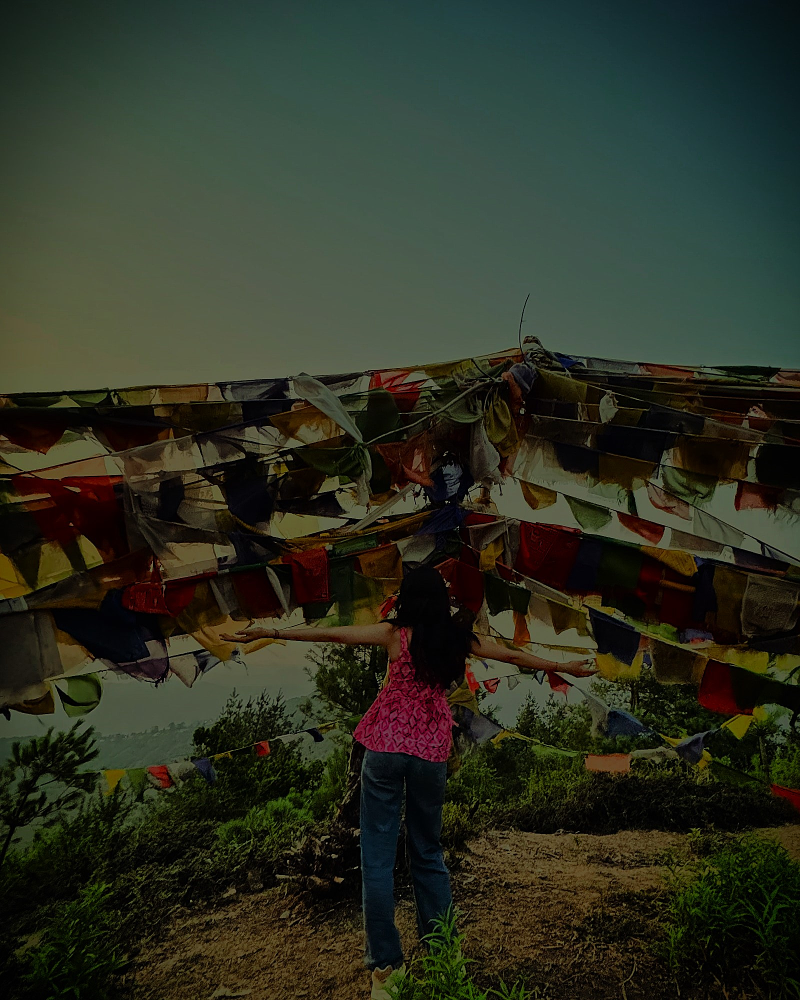

ᯓ✦ Welcome to my corner of the web. I'm an 18-year-old finding joy in the simple things. There's always a spark of excitement lighting up my world. My hobby include weaving verses into poems. I am an energetic go-getter but Sometimes, I like to just sitback and observe things around. I enjoy the outdoors, whether it's travelling, hiking or sports each moment fills me with boundless energy and joy. Glad to have you here! Let's make every moment count ✧˚